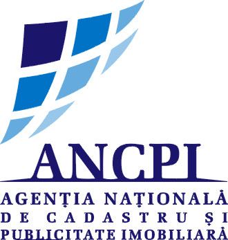

Cadastru · Topografie · Proiectare edilitară
Asistență de specialitate pentru proprietari, companii, proiectanți și constructori, din 2002.
Descrieți pe scurt imobilul, localitatea și serviciul dorit.
Începând din anul 2002 realizăm lucrări de topografie și cadastru general. Echipa noastră de specialiști împărtășește cu partenerii săi experiență de 30 de ani în domeniul geodeziei și cartografiei. Profesionalismul și orientarea permanentă către nevoile clientului ne-au ajutat să avem succes.
ContactDocumentații pentru apartamente, terenuri, case și spații comerciale.
Vezi detaliiÎmpărțirea sau unificarea imobilelor prin documentația cadastrală potrivită.
Vezi detaliiPlanuri pentru proiectare, construcții, infrastructură și amenajarea terenului.
Vezi detaliiLimite de proprietate, axe de construcții, cote și trasee edilitare.
Vezi detaliiÎnscrierea construcțiilor și actualizarea datelor tehnice ale imobilului.
Vezi detaliiAlimentări cu apă, canalizare, stații de epurare și lucrări conexe.
Vezi detaliiEvaluări pentru proprietăți, bunuri mobile, afaceri și mijloace fixe.
Vezi detaliiMăsurători pentru trasee, infrastructură și proiecte cu cerințe tehnice specifice.
Vezi detalii
Str. Mihail Kogălniceanu, nr. 19, bl. 97, sc. E, Ap. 12, Craiova